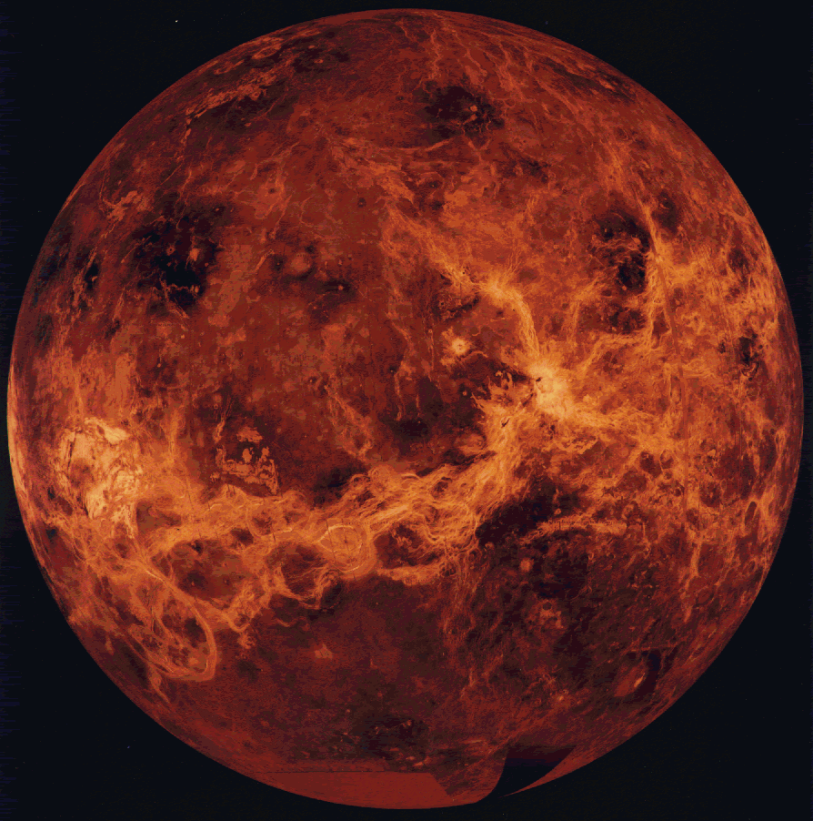

|
|
 VenusVenus is the second planet from the Sun, and is Earth's closest neighbor plant in the solar system. Venus is the brightest object in the sky after the Sun and the Moon the planet is slightly smaller than Earth, and its interior is similar to Earth. We can't see the surface of Venus from Earth, because it is covered with thick clouds that strongly reflect sunlight. Though, space missions to Venus have shown us that its surface is covered with craters, over 1600 major volcanoes, mountains, large highland terrains, and vast lava plains. Temperatures reach more than 450C (approaching 900F - high enough to melt lead), an atmosphere 90 times heavier than our own plant. The atmosphere of Venus is very hot and thick. You would not be able to survive a visit to the surface of the planet you wouldn’t be able to breathe the air, you would be crushed by the enormous weight of the atmosphere, and you would burn up in surface temperatures. The atmosphere of Venus is made up mainly of carbon dioxide, and thick clouds of sulfuric acid completely cover the planet. The atmosphere traps the small amount of energy from the sun that does reach the surface along with the heat the planet itself releases. This greenhouse effect has made the surface and lower atmosphere of Venus one of the hottest places in the solar system. If you were on the surface of the planet, the air above you would be about 90 times heavier than the Earth's atmosphere. This is similar to what a submarine experiences at 3000 ft below the surface of the Earth's ocean. The atmosphere is composed mainly of carbon dioxide (96%), 3.5% nitrogen, and less than1% is made up of carbon monoxide, argon, sulfur dioxide, and water vapor. |